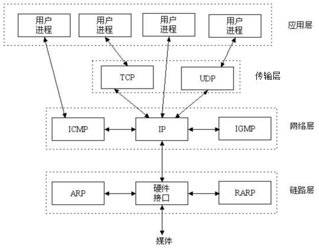
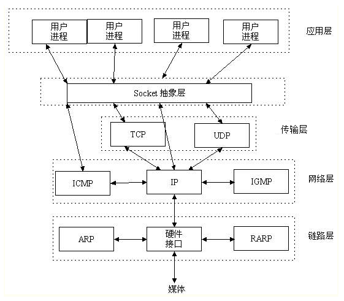
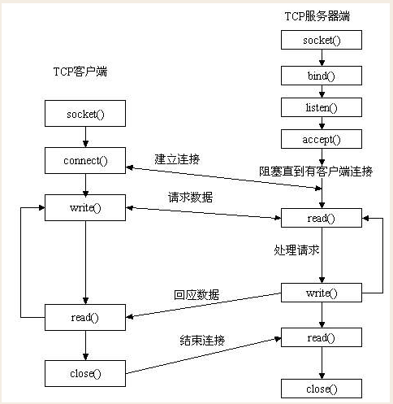
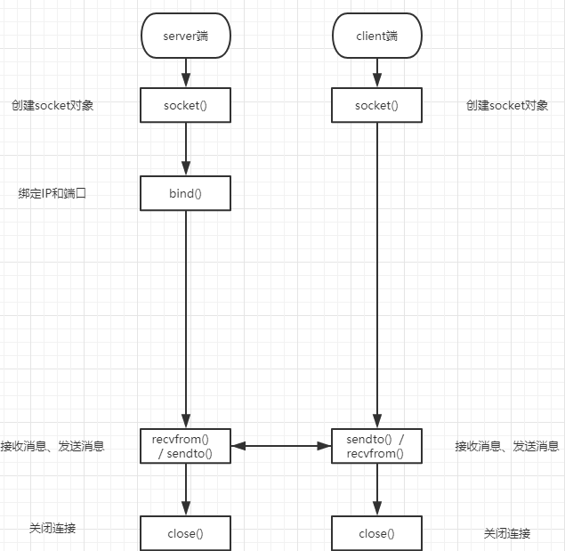
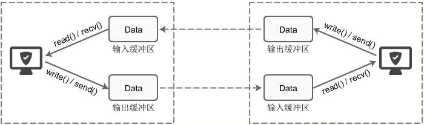
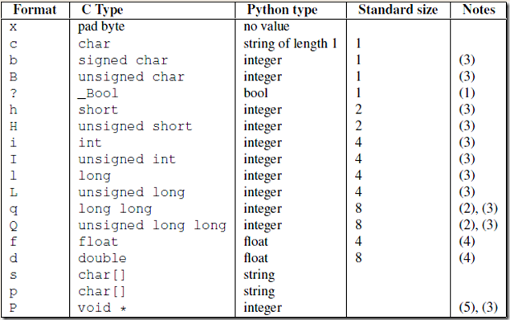

目录
看socket之前，先来回顾一下五层通讯流程：

但实际上从传输层开始以及以下，都是操作系统帮咱们完成的，下面的各种包头封装的过程，用咱们去一个一个做么？NO！

Socket又称为套接字，它是应用层与TCP/IP协议族通信的中间软件抽象层，它是一组接口。在设计模式中，Socket其实就是一个门面模式，它把复杂的TCP/IP协议族隐藏在Socket接口后面，对用户来说，一组简单的接口就是全部，让Socket去组织数据，以符合指定的协议。当我们使用不同的协议进行通信时就得使用不同的接口，还得处理不同协议的各种细节，这就增加了开发的难度，软件也不易于扩展(就像我们开发一套公司管理系统一样，报账、会议预定、请假等功能不需要单独写系统，而是一个系统上多个功能接口，不需要知道每个功能如何去实现的)。于是UNIX BSD就发明了socket这种东西，socket屏蔽了各个协议的通信细节，使得程序员无需关注协议本身，直接使用socket提供的接口来进行互联的不同主机间的进程的通信。这就好比操作系统给我们提供了使用底层硬件功能的系统调用，通过系统调用我们可以方便的使用磁盘（文件操作），使用内存，而无需自己去进行磁盘读写，内存管理。socket其实也是一样的东西，就是提供了tcp/ip协议的抽象，对外提供了一套接口，同过这个接口就可以统一、方便的使用tcp/ip协议的功能了。
其实站在你的角度上看，socket就是一个模块。我们通过调用模块中已经实现的方法建立两个进程之间的连接和通信。也有人将socket说成ip+port，因为ip是用来标识互联网中的一台主机的位置，而port是用来标识这台机器上的一个应用程序。 所以我们只要确立了ip和port就能找到一个应用程序，并且使用socket模块来与之通信。
套接字起源于 20 世纪 70 年代加利福尼亚大学伯克利分校版本的 Unix,即人们所说的 BSD Unix。 因此,有时人们也把套接字称为“伯克利套接字”或“BSD 套接字”。一开始,套接字被设计用在同 一台主机上多个应用程序之间的通讯。这也被称进程间通讯或 IPC。套接字有两种（或者称为有两个种族）,分别是基于文件型的和基于网络型的。
套接字家族的名字：AF_UNIX
unix一切皆文件，基于文件的套接字调用的就是底层的文件系统来取数据，两个套接字进程运行在同一机器，可以通过访问同一个文件系统间接完成通信
套接字家族的名字：AF_INET
(还有AF_INET6被用于ipv6，还有一些其他的地址家族，不过，他们要么是只用于某个平台，要么就是已经被废弃，或者是很少被使用，或者是根本没有实现，所有地址家族中，AF_INET是使用最广泛的一个，python支持很多种地址家族，但是由于我们只关心网络编程，所以大部分时候我么只使用AF_INET)
TCP（Transmission Control Protocol）可靠的、面向连接的协议（eg:打电话）、传输效率低全双工通信（发送缓存&接收缓存）、面向字节流。使用TCP的应用：Web浏览器；文件传输程序。
UDP（User Datagram Protocol）不可靠的、无连接的服务，传输效率高（发送前时延小），一对一、一对多、多对一、多对多、面向报文(数据包)，尽最大努力服务，无拥塞控制。使用UDP的应用：域名系统 (DNS)；视频流；IP语音(VoIP)。
生活中的场景。你要打电话给一个朋友，先拨号，朋友听到电话铃声后提起电话，这时你和你的朋友就建立起了连接，就可以讲话了。等交流结束，挂断电话结束此次交谈。 生活中的场景就解释了这工作原理。

先从服务器端说起。服务器端先初始化Socket，然后与端口绑定(bind)，对端口进行监听(listen)，调用accept阻塞，等待客户端连接。在这时如果有个客户端初始化一个Socket，然后连接服务器(connect)，如果连接成功，这时客户端与服务器端的连接就建立了。客户端发送数据请求，服务器端接收请求并处理请求，然后把回应数据发送给客户端，客户端读取数据，最后关闭连接，一次交互结束
import socket
socket.socket(socket_family,socket_type,protocal=0)
socket_family 可以是 AF_UNIX 或 AF_INET。socket_type 可以是 SOCK_STREAM 或 SOCK_DGRAM。protocol 一般不填,默认值为 0。
获取tcp/ip套接字
tcpSock = socket.socket(socket.AF_INET, socket.SOCK_STREAM)
获取udp/ip套接字
udpSock = socket.socket(socket.AF_INET, socket.SOCK_DGRAM)
由于 socket 模块中有太多的属性。我们在这里破例使用了'from module import *'语句。使用 'from socket import *',我们就把 socket 模块里的所有属性都带到我们的命名空间里了,这样能 大幅减短我们的代码。
例如tcpSock = socket(AF_INET, SOCK_STREAM)
服务端套接字函数
s.bind() 绑定(主机,端口号)到套接字
s.listen() 开始TCP监听 backlog 半连接池
s.accept() 被动接受TCP客户的连接,(阻塞式)等待连接的到来
客户端套接字函数
s.connect() 主动初始化TCP服务器连接
s.connect_ex() connect()函数的扩展版本,出错时返回出错码,而不是抛出异常
公共用途的套接字函数
s.recv() 接收TCP数据
s.send() 发送TCP数据(send在待发送数据量大于己端缓存区剩余空间时,数据丢失,不会发完)
s.sendall() 发送完整的TCP数据(本质就是循环调用send,sendall在待发送数据量大于己端缓存区剩余空间时,数据不丢失,循环调用send直到发完)
s.recvfrom() 接收UDP数据
s.sendto() 发送UDP数据
s.getpeername() 连接到当前套接字的远端的地址
s.getsockname() 当前套接字的地址
s.getsockopt() 返回指定套接字的参数
s.setsockopt() 设置指定套接字的参数
s.close() 关闭套接字
面向锁的套接字方法
s.setblocking() 设置套接字的阻塞与非阻塞模式
s.settimeout() 设置阻塞套接字操作的超时时间
s.gettimeout() 得到阻塞套接字操作的超时时间
面向文件的套接字的函数
s.fileno() 套接字的文件描述符
s.makefile() 创建一个与该套接字相关的文件服务端
# 网络通信与打电话（诺基亚）是一样的。
import socket
phone = socket.socket(socket.AF_INET,socket.SOCK_STREAM) # 买电话
phone.bind(('127.0.0.1',8080)) # 0 ~ 65535 1024之前系统分配好的端口 绑定电话卡
phone.listen(5) # 同一时刻有5个请求，一个在通信,一共6个.但是可以有N多个链接。 开机。
conn, client_addr = phone.accept() # 接电话
print(conn, client_addr, sep='\n')
from_client_data = conn.recv(1024) # 一次接收的最大限制 bytes
print(from_client_data.decode('utf-8'))
conn.send(from_client_data.upper())
conn.close() # 挂电话
phone.close() # 关机客户端
import socket
phone = socket.socket(socket.AF_INET,socket.SOCK_STREAM) # 买电话
phone.connect(('127.0.0.1',8080)) # 与客户端建立连接， 拨号
phone.send('hello'.encode('utf-8'))
from_server_data = phone.recv(1024)
print(from_server_data)
phone.close() # 挂电话服务端
import socket
phone = socket.socket(socket.AF_INET,socket.SOCK_STREAM)
phone.bind(('127.0.0.1',8080))
phone.listen(5)
conn, client_addr = phone.accept()
print(conn, client_addr, sep='\n')
while 1: # 循环收发消息
try:
from_client_data = conn.recv(1024)
print(from_client_data.decode('utf-8'))
conn.send(from_client_data + b'SB')
except ConnectionResetError:
break
conn.close()
phone.close()客户端
import socket
phone = socket.socket(socket.AF_INET,socket.SOCK_STREAM) # 买电话
phone.connect(('127.0.0.1',8080)) # 与客户端建立连接， 拨号
while 1: # 循环收发消息
client_data = input('>>>')
phone.send(client_data.encode('utf-8'))
from_server_data = phone.recv(1024)
print(from_server_data.decode('utf-8'))
phone.close() # 挂电话服务端
import socket
phone = socket.socket(socket.AF_INET,socket.SOCK_STREAM)
phone.bind(('127.0.0.1',8080))
phone.listen(5)
while 1 : # 循环连接客户端
conn, client_addr = phone.accept()
print(client_addr)
while 1:
try:
from_client_data = conn.recv(1024)
print(from_client_data.decode('utf-8'))
conn.send(from_client_data + b'SB')
except ConnectionResetError:
break
conn.close()
phone.close()客户端
import socket
phone = socket.socket(socket.AF_INET,socket.SOCK_STREAM) # 买电话
phone.connect(('127.0.0.1',8080)) # 与客户端建立连接， 拨号
while 1:
client_data = input('>>>')
phone.send(client_data.encode('utf-8'))
from_server_data = phone.recv(1024)
print(from_server_data.decode('utf-8'))
phone.close() # 挂电话'''
源码解释：
Receive up to buffersize bytes from the socket.
接收来自socket缓冲区的字节数据，
For the optional flags argument, see the Unix manual.
对于这些设置的参数，可以查看Unix手册。
When no data is available, block untilat least one byte is available or until the remote end is closed.
当缓冲区没有数据可取时，recv会一直处于阻塞状态，直到缓冲区至少有一个字节数据可取，或者远程端关闭。
When the remote end is closed and all data is read, return the empty string.
关闭远程端并读取所有数据后，返回空字符串。
'''
----------服务端------------：
# 1，验证服务端缓冲区数据没有取完，又执行了recv执行，recv会继续取值。
import socket
phone =socket.socket(socket.AF_INET,socket.SOCK_STREAM)
phone.bind(('127.0.0.1',8080))
phone.listen(5)
conn, client_addr = phone.accept()
from_client_data1 = conn.recv(2)
print(from_client_data1)
from_client_data2 = conn.recv(2)
print(from_client_data2)
from_client_data3 = conn.recv(1)
print(from_client_data3)
conn.close()
phone.close()
# 2，验证服务端缓冲区取完了，又执行了recv执行，此时客户端20秒内不关闭的前提下，recv处于阻塞状态。
import socket
phone =socket.socket(socket.AF_INET,socket.SOCK_STREAM)
phone.bind(('127.0.0.1',8080))
phone.listen(5)
conn, client_addr = phone.accept()
from_client_data = conn.recv(1024)
print(from_client_data)
print(111)
conn.recv(1024) # 此时程序阻塞20秒左右，因为缓冲区的数据取完了，并且20秒内，客户端没有关闭。
print(222)
conn.close()
phone.close()
# 3 验证服务端缓冲区取完了，又执行了recv执行，此时客户端处于关闭状态，则recv会取到空字符串。
import socket
phone =socket.socket(socket.AF_INET,socket.SOCK_STREAM)
phone.bind(('127.0.0.1',8080))
phone.listen(5)
conn, client_addr = phone.accept()
from_client_data1 = conn.recv(1024)
print(from_client_data1)
from_client_data2 = conn.recv(1024)
print(from_client_data2)
from_client_data3 = conn.recv(1024)
print(from_client_data3)
conn.close()
phone.close()
------------客户端------------
# 1，验证服务端缓冲区数据没有取完，又执行了recv执行，recv会继续取值。
import socket
import time
phone = socket.socket(socket.AF_INET,socket.SOCK_STREAM)
phone.connect(('127.0.0.1',8080))
phone.send('hello'.encode('utf-8'))
time.sleep(20)
phone.close()
# 2，验证服务端缓冲区取完了，又执行了recv执行，此时客户端20秒内不关闭的前提下，recv处于阻塞状态。
import socket
import time
phone = socket.socket(socket.AF_INET,socket.SOCK_STREAM)
phone.connect(('127.0.0.1',8080))
phone.send('hello'.encode('utf-8'))
time.sleep(20)
phone.close()
# 3，验证服务端缓冲区取完了，又执行了recv执行，此时客户端处于关闭状态，则recv会取到空字符串。
import socket
import time
phone = socket.socket(socket.AF_INET,socket.SOCK_STREAM)
phone.connect(('127.0.0.1',8080))
phone.send('hello'.encode('utf-8'))
phone.close()服务端
import socket
import subprocess
phone = socket.socket(socket.AF_INET,socket.SOCK_STREAM)
phone.bind(('127.0.0.1',8080))
phone.listen(5)
while 1 : # 循环连接客户端
conn, client_addr = phone.accept()
print(client_addr)
while 1:
try:
cmd = conn.recv(1024)
ret = subprocess.Popen(cmd.decode('utf-8'),shell=True,stdout=subprocess.PIPE,stderr=subprocess.PIPE)
correct_msg = ret.stdout.read()
error_msg = ret.stderr.read()
conn.send(correct_msg + error_msg)
except ConnectionResetError:
break
conn.close()
phone.close()客户端
import socket
phone = socket.socket(socket.AF_INET,socket.SOCK_STREAM) # 买电话
phone.connect(('127.0.0.1',8080)) # 与客户端建立连接， 拨号
while 1:
cmd = input('>>>')
phone.send(cmd.encode('utf-8'))
from_server_data = phone.recv(1024)
print(from_server_data.decode('gbk'))
phone.close() # 挂电话udp是无链接的，先启动哪一端都不会报错

UDP下的socket通讯流程
先从服务器端说起。服务器端先初始化Socket，然后与端口绑定(bind)，recvform接收消息，这个消息有两项，消息内容和对方客户端的地址，然后回复消息时也要带着你收到的这个客户端的地址，发送回去，最后关闭连接，一次交互结束
上代码感受一下，需要创建两个文件，文件名称随便起，为了方便看，我的两个文件名称为udp_server.py(服务端)和udp_client.py(客户端)，将下面的server端的代码拷贝到udp_server.py文件中，将下面cliet端的代码拷贝到udp_client.py的文件中，然后先运行udp_server.py文件中的代码，再运行udp_client.py文件中的代码，然后在pycharm下面的输出窗口看一下效果。
import socket
udp_sk = socket.socket(type=socket.SOCK_DGRAM) #创建一个服务器的套接字
udp_sk.bind(('127.0.0.1',9000)) #绑定服务器套接字
msg,addr = udp_sk.recvfrom(1024)
print(msg)
udp_sk.sendto(b'hi',addr) # 对话(接收与发送)
udp_sk.close() # 关闭服务器套接字import socket
ip_port=('127.0.0.1',9000)
udp_sk=socket.socket(type=socket.SOCK_DGRAM)
udp_sk.sendto(b'hello',ip_port)
back_msg,addr=udp_sk.recvfrom(1024)
print(back_msg.decode('utf-8'),addr)server端
#_*_coding:utf-8_*_
import socket
ip_port=('127.0.0.1',8081)
udp_server_sock=socket.socket(socket.AF_INET,socket.SOCK_DGRAM) #DGRAM:datagram 数据报文的意思，象征着UDP协议的通信方式
udp_server_sock.bind(ip_port)#你对外提供服务的端口就是这一个，所有的客户端都是通过这个端口和你进行通信的
while True:
qq_msg,addr=udp_server_sock.recvfrom(1024)# 阻塞状态，等待接收消息
print('来自[%s:%s]的一条消息:\033[1;44m%s\033[0m' %(addr[0],addr[1],qq_msg.decode('utf-8')))
back_msg=input('回复消息: ').strip()
udp_server_sock.sendto(back_msg.encode('utf-8'),addr)client端
import socket
BUFSIZE=1024
udp_client_socket=socket.socket(socket.AF_INET,socket.SOCK_DGRAM)
qq_name_dic={
'taibai':('127.0.0.1',8081),
'Jedan':('127.0.0.1',8081),
'Jack':('127.0.0.1',8081),
'John':('127.0.0.1',8081),
}
while True:
qq_name=input('请选择聊天对象: ').strip()
while True:
msg=input('请输入消息,回车发送,输入q结束和他的聊天: ').strip()
if msg == 'q':break
if not msg or not qq_name or qq_name not in qq_name_dic:continue
udp_client_socket.sendto(msg.encode('utf-8'),qq_name_dic[qq_name])# 必须带着自己的地址，这就是UDP不一样的地方，不需要建立连接，但是要带着自己的地址给服务端，否则服务端无法判断是谁给我发的消息，并且不知道该把消息回复到什么地方，因为我们之间没有建立连接通道
back_msg,addr=udp_client_socket.recvfrom(BUFSIZE)# 同样也是阻塞状态，等待接收消息
print('来自[%s:%s]的一条消息:\033[1;44m%s\033[0m' %(addr[0],addr[1],back_msg.decode('utf-8')))
udp_client_socket.close()接下来，给大家说一个真实的例子，也就是实际当中应用的，那么这是个什么例子呢？就是我们电脑系统上的时间，windows系统的时间是和微软的时间服务器上的时间同步的，而mac本是和苹果服务商的时间服务器同步的，这是怎么做的呢，首先他们的时间服务器上的时间是和国家同步的，你们用我的系统，那么你们的时间只要和我时间服务器上的时间同步就行了，对吧，我时间服务器是不是提供服务的啊，相当于一个服务端，我们的电脑就相当于客户端，就是通过UDP来搞的。
自制时间服务器的代码示例：
server端
from socket import *
from time import strftime
import time
ip_port = ('127.0.0.1', 9000)
bufsize = 1024
tcp_server = socket(AF_INET, SOCK_DGRAM)
tcp_server.setsockopt(SOL_SOCKET,SO_REUSEADDR,1)
tcp_server.bind(ip_port)
while True:
msg, addr = tcp_server.recvfrom(bufsize)
print('===>', msg)
stru_time = time.localtime() #当前的结构化时间
if not msg:
time_fmt = '%Y-%m-%d %X'
else:
time_fmt = msg.decode('utf-8')
back_msg = strftime(time_fmt,stru_time)
print(back_msg,type(back_msg))
tcp_server.sendto(back_msg.encode('utf-8'), addr)
tcp_server.close()client端
from socket import *
ip_port=('127.0.0.1',9000)
bufsize=1024
tcp_client=socket(AF_INET,SOCK_DGRAM)
while True:
msg=input('请输入时间格式(例%Y %m %d)>>: ').strip()
tcp_client.sendto(msg.encode('utf-8'),ip_port)
data=tcp_client.recv(bufsize)
print('当前日期：',str(data,encoding='utf-8'))socket缓存区的详细解释

每个 socket 被创建后，都会分配两个缓冲区，输入缓冲区和输出缓冲区。
write()/send() 并不立即向网络中传输数据，而是先将数据写入缓冲区中，再由TCP协议将数据从缓冲区发送到目标机器。一旦将数据写入到缓冲区，函数就可以成功返回，不管它们有没有到达目标机器，也不管它们何时被发送到网络，这些都是TCP协议负责的事情。
TCP协议独立于 write()/send() 函数，数据有可能刚被写入缓冲区就发送到网络，也可能在缓冲区中不断积压，多次写入的数据被一次性发送到网络，这取决于当时的网络情况、当前线程是否空闲等诸多因素，不由程序员控制。
read()/recv() 函数也是如此，也从输入缓冲区中读取数据，而不是直接从网络中读取。
这些I/O缓冲区特性可整理如下：
1.I/O缓冲区在每个TCP套接字中单独存在；
2.I/O缓冲区在创建套接字时自动生成；
3.即使关闭套接字也会继续传送输出缓冲区中遗留的数据；
4.关闭套接字将丢失输入缓冲区中的数据。
输入输出缓冲区的默认大小一般都是 8K，可以通过 getsockopt() 函数获取：
1.unsigned optVal;
2.int optLen = sizeof(int);
3.getsockopt(servSock, SOL_SOCKET, SO_SNDBUF,(char*)&optVal, &optLen);
4.printf("Buffer length: %d\n", optVal);
socket缓冲区解释代码查看缓冲区大小
import socket
server = socket.socket()
server.setsockopt(socket.SOL_SOCKET,socket.SO_REUSEADDR,1) # 重用ip地址和端口
server.bind(('127.0.0.1',8010))
server.listen(3)
print(server.getsockopt(socket.SOL_SOCKET,socket.SO_SNDBUF)) # 输出缓冲区大小
print(server.getsockopt(socket.SOL_SOCKET,socket.SO_RCVBUF)) # 输入缓冲区大小须知：只有TCP有粘包现象，UDP永远不会粘包！
具体原因
发送端可以是一K一K地发送数据，而接收端的应用程序可以两K两K地提走数据，当然也有可能一次提走3K或6K数据，或者一次只提走几个字节的数据，也就是说，应用程序所看到的数据是一个整体，或说是一个流（stream），一条消息有多少字节对应用程序是不可见的，因此TCP协议是面向流的协议，这也是容易出现粘包问题的原因。而UDP是面向消息的协议，每个UDP段都是一条消息，应用程序必须以消息为单位提取数据，不能一次提取任意字节的数据，这一点和TCP是很不同的。怎样定义消息呢？可以认为对方一次性write/send的数据为一个消息，需要明白的是当对方send一条信息的时候，无论底层怎样分段分片，TCP协议层会把构成整条消息的数据段排序完成后才呈现在内核缓冲区。
例如基于tcp的套接字客户端往服务端上传文件，发送时文件内容是按照一段一段的字节流发送的，在接收方看了，根本不知道该文件的字节流从何处开始，在何处结束
所谓粘包问题主要还是因为接收方不知道消息之间的界限，不知道一次性提取多少字节的数据所造成的。
此外，发送方引起的粘包是由TCP协议本身造成的，TCP为提高传输效率，发送方往往要收集到足够多的数据后才发送一个TCP段。若连续几次需要send的数据都很少，通常TCP会根据优化算法把这些数据合成一个TCP段后一次发送出去，这样接收方就收到了粘包数据。
TCP（transport control protocol，传输控制协议）是面向连接的，面向流的，提供高可靠性服务。收发两端（客户端和服务器端）都要有一一成对的socket，因此，发送端为了将多个发往接收端的包，更有效的发到对方，使用了优化方法（Nagle算法），将多次间隔较小且数据量小的数据，合并成一个大的数据块，然后进行封包。这样，接收端，就难于分辨出来了，必须提供科学的拆包机制。 即面向流的通信是无消息保护边界的。
UDP（user datagram protocol，用户数据报协议）是无连接的，面向消息的，提供高效率服务。不会使用块的合并优化算法，, 由于UDP支持的是一对多的模式，所以接收端的skbuff(套接字缓冲区）采用了链式结构来记录每一个到达的UDP包，在每个UDP包中就有了消息头（消息来源地址，端口等信息），这样，对于接收端来说，就容易进行区分处理了。 即面向消息的通信是有消息保护边界的。
tcp是基于数据流的，于是收发的消息不能为空，这就需要在客户端和服务端都添加空消息的处理机制，防止程序卡住，而udp是基于数据报的，即便是你输入的是空内容（直接回车），那也不是空消息，udp协议会帮你封装上消息头，实验略
udp的recvfrom是阻塞的，一个recvfrom(x)必须对唯一一个sendinto(y),收完了x个字节的数据就算完成,若是y>x数据就丢失，这意味着udp根本不会粘包，但是会丢数据，不可靠
tcp的协议数据不会丢，没有收完包，下次接收，会继续上次继续接收，己端总是在收到ack时才会清除缓冲区内容。数据是可靠的，但是会粘包。1.接收方没有及时接收缓冲区的包，造成多个包接收（服务端发送了一段数据，客户端只收了一小部分，客户端下次再收的时候还是从缓冲区拿上次遗留的数据，产生粘包）
服务端
import socket
import subprocess
phone = socket.socket(socket.AF_INET, socket.SOCK_STREAM)
phone.bind(('127.0.0.1', 8080))
phone.listen(5)
while 1: # 循环连接客户端
conn, client_addr = phone.accept()
print(client_addr)
while 1:
try:
cmd = conn.recv(1024)
ret = subprocess.Popen(cmd.decode('utf-8'), shell=True, stdout=subprocess.PIPE, stderr=subprocess.PIPE)
correct_msg = ret.stdout.read()
error_msg = ret.stderr.read()
conn.send(correct_msg + error_msg)
except ConnectionResetError:
break
conn.close()
phone.close()客户端
import socket
phone = socket.socket(socket.AF_INET,socket.SOCK_STREAM) # 买电话
phone.connect(('127.0.0.1',8080)) # 与客户端建立连接， 拨号
while 1:
cmd = input('>>>')
phone.send(cmd.encode('utf-8'))
from_server_data = phone.recv(1024)
print(from_server_data.decode('gbk'))
phone.close()
# 由于客户端发的命令获取的结果大小已经超过1024，那么下次在输入命令，会继续取上次残留到缓存区的数据。2.发送端需要等缓冲区满才发送出去，造成粘包（发送数据时间间隔很短，数据也很小，会合到一起，产生粘包）
服务端
import socket
phone = socket.socket(socket.AF_INET, socket.SOCK_STREAM)
phone.bind(('127.0.0.1', 8080))
phone.listen(5)
conn, client_addr = phone.accept()
frist_data = conn.recv(1024)
print('1:',frist_data.decode('utf-8')) # 1: helloworld
second_data = conn.recv(1024)
print('2:',second_data.decode('utf-8')) # 2:b''
conn.close()
phone.close()客户端
import socket
phone = socket.socket(socket.AF_INET, socket.SOCK_STREAM)
phone.connect(('127.0.0.1', 8080))
phone.send(b'hello')
phone.send(b'world')
phone.close()
# 两次返送信息时间间隔太短，数据小，造成服务端一次收取先介绍一下struct模块：
该模块可以把一个类型，如数字，转成固定长度的bytes

import struct
# 将一个数字转化成等长度的bytes类型。
ret = struct.pack('i', 183346)
print(ret, type(ret), len(ret))
# 通过unpack反解回来
ret1 = struct.unpack('i',ret)[0]
print(ret1, type(ret1), len(ret1))
# 但是通过struct 处理不能处理太大
ret = struct.pack('l', 4323241232132324)
print(ret, type(ret), len(ret)) # 报错问题的根源在于，接收端不知道发送端将要传送的字节流的长度，所以解决粘包的方法就是围绕，如何让发送端在发送数据前，把自己将要发送的字节流总数按照固定字节发送给接收端后面跟上总数据，然后接收端先接收固定字节的总字节流，再来一个死循环接收完所有数据。
服务端
import socket
import subprocess
import struct
phone = socket.socket(socket.AF_INET, socket.SOCK_STREAM)
phone.bind(('127.0.0.1', 8080))
phone.listen(5)
while 1:
conn, client_addr = phone.accept()
print(client_addr)
while 1:
try:
cmd = conn.recv(1024)
ret = subprocess.Popen(cmd.decode('utf-8'), shell=True, stdout=subprocess.PIPE, stderr=subprocess.PIPE)
correct_msg = ret.stdout.read()
error_msg = ret.stderr.read()
# 1 制作固定报头
total_size = len(correct_msg) + len(error_msg)
header = struct.pack('i', total_size)
# 2 发送报头
conn.send(header)
# 发送真实数据：
conn.send(correct_msg)
conn.send(error_msg)
except ConnectionResetError:
break
conn.close()
phone.close()
# 但是low版本有问题：
# 1，报头不只有总数据大小，而是还应该有MD5数据，文件名等等一些数据。
# 2，通过struct模块直接数据处理，不能处理太大。客户端
import socket
import struct
phone = socket.socket(socket.AF_INET,socket.SOCK_STREAM)
phone.connect(('127.0.0.1',8080))
while 1:
cmd = input('>>>').strip()
if not cmd: continue
phone.send(cmd.encode('utf-8'))
# 1，接收固定报头
header = phone.recv(4)
# 2，解析报头
total_size = struct.unpack('i', header)[0]
# 3，根据报头信息，接收真实数据
recv_size = 0
res = b''
while recv_size < total_size:
recv_data = phone.recv(1024)
res += recv_data
recv_size += len(recv_data)
print(res.decode('gbk'))
phone.close()'''
整个流程的大致解释：
我们可以把报头做成字典，字典里包含将要发送的真实数据的描述信息(大小啊之类的)，然后json序列化，然后用struck将序列化后的数据长度打包成4个字节。
我们在网络上传输的所有数据 都叫做数据包，数据包里的所有数据都叫做报文，报文里面不止有你的数据，还有ip地址、mac地址、端口号等等，其实所有的报文都有报头，这个报头是协议规定的，看一下
发送时：
先发报头长度
再编码报头内容然后发送
最后发真实内容
接收时：
先手报头长度，用struct取出来
根据取出的长度收取报头内容，然后解码，反序列化
从反序列化的结果中取出待取数据的描述信息，然后去取真实的数据内容
'''服务端
import socket
import subprocess
import struct
import json
phone = socket.socket(socket.AF_INET, socket.SOCK_STREAM)
phone.bind(('127.0.0.1', 8080))
phone.listen(5)
while 1:
conn, client_addr = phone.accept()
print(client_addr)
while 1:
try:
cmd = conn.recv(1024)
ret = subprocess.Popen(cmd.decode('utf-8'), shell=True, stdout=subprocess.PIPE, stderr=subprocess.PIPE)
correct_msg = ret.stdout.read()
error_msg = ret.stderr.read()
# 1 制作固定报头
total_size = len(correct_msg) + len(error_msg)
header_dict = {
'md5': 'fdsaf2143254f',
'file_name': 'f1.txt',
'total_size':total_size,
}
header_dict_json = json.dumps(header_dict) # str
bytes_headers = header_dict_json.encode('utf-8')
header_size = len(bytes_headers)
header = struct.pack('i', header_size)
# 2 发送报头长度
conn.send(header)
# 3 发送报头
conn.send(bytes_headers)
# 4 发送真实数据：
conn.send(correct_msg)
conn.send(error_msg)
except ConnectionResetError:
break
conn.close()
phone.close()客户端
import socket
import struct
import json
phone = socket.socket(socket.AF_INET,socket.SOCK_STREAM)
phone.connect(('127.0.0.1',8080))
while 1:
cmd = input('>>>').strip()
if not cmd: continue
phone.send(cmd.encode('utf-8'))
# 1，接收固定报头
header_size = struct.unpack('i', phone.recv(4))[0]
# 2，解析报头长度
header_bytes = phone.recv(header_size)
header_dict = json.loads(header_bytes.decode('utf-8'))
# 3,收取报头
total_size = header_dict['total_size']
# 3，根据报头信息，接收真实数据
recv_size = 0
res = b''
while recv_size < total_size:
recv_data = phone.recv(1024)
res += recv_data
recv_size += len(recv_data)
print(res.decode('gbk'))
phone.close()server端
import socket
import subprocess
import json
import struct
phone = socket.socket(socket.AF_INET, socket.SOCK_STREAM)
phone.bind(('127.0.0.1', 8001))
phone.listen(5)
file_positon = r'd:\上传下载'
conn, client_addr = phone.accept()
# 1.接收固定4个字节
ret = conn.recv(4)
#
# 2.利用struct模块将ret反解出head_dic_bytes的总字节数。
head_dic_bytes_size = struct.unpack('i',ret)[0]
#
# 3.接收 head_dic_bytes数据。
head_dic_bytes = conn.recv(head_dic_bytes_size)
# 4.将head_dic_bytes解码成json字符串格式。
head_dic_json = head_dic_bytes.decode('utf-8')
# 5.将json字符串还原成字典模式。
head_dic = json.loads(head_dic_json)
file_path = os.path.join(file_positon,head_dic['file_name'])
with open(file_path,mode='wb') as f1:
data_size = 0
while data_size < head_dic['file_size']:
data = conn.recv(1024)
f1.write(data)
data_size += len(data)
conn.close()
phone.close()client端
import socket
import struct
import json
import os
phone = socket.socket(socket.AF_INET, socket.SOCK_STREAM) # 买电话
phone.connect(('127.0.0.1', 8001)) # 与客户端建立连接， 拨号
# 1 制定file_info
file_info = {
'file_path': r'D:\lnh.python\pyproject\PythonReview\网络编程\08 文件的上传下载\low版\aaa.mp4',
'file_name': 'aaa.mp4',
'file_size': None,
}
# 2 获取并设置文件大小
file_info['file_size'] = os.path.getsize(file_info['file_path'])
# 2，利用json将head_dic 转化成字符串
head_dic_json = json.dumps(file_info)
# 3,将head_dic_json转化成bytes
head_dic_bytes = head_dic_json.encode('utf-8')
# 4，将head_dic_bytes的大小转化成固定的4个字节。
ret = struct.pack('i', len(head_dic_bytes)) # 固定四个字节
# 5, 发送固定四个字节
phone.send(ret)
# 6 发送head_dic_bytes
phone.send(head_dic_bytes)
# 发送文件：
with open(file_info['file_path'],mode='rb') as f1:
data_size = 0
while data_size < file_info['file_size']:
# f1.read() 不能全部读出来，而且也不能send全部，这样send如果过大，也会出问题，保险起见，每次至多send(1024字节)
every_data = f1.read(1024)
data_size += len(every_data)
phone.send(every_data)
phone.close()